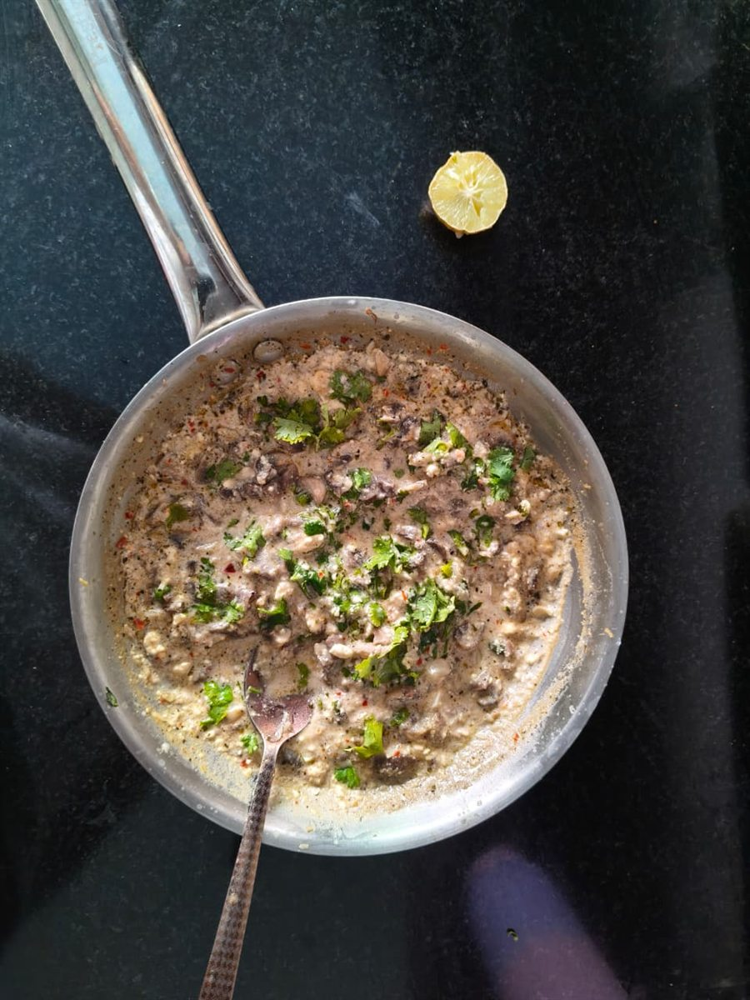

Section
Recipes
Things made in an ordinary kitchen, with whatever was already in the fridge. Not a food blog — just what happens when curiosity ends up on a plate.

RecipesLemon Coriander Mushrooms
A creamy mushroom supper made with paneer instead of cream — fresh coriander and lemon keep it light. Ready in 25 minutes.
 Recipes
Recipes
Paneer Tiramisu, The Honest Kind
A high-protein, no-mascarpone tiramisu made with paneer, honey, and Britannia Toastea rusks — inspired by a YouTube recipe, adapted from the pantry.